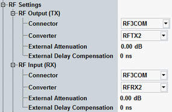
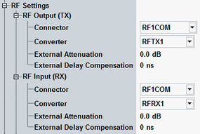

To prepare a handover, both signaling applications must be configured and a WCDMA CS connection must be set up. These steps are described in detail below.
As a prerequisite the mobile must be connected, see section "Test Setup".
Configure the "GSM Signaling" application:
Open the application, for example, from the task bar (press "TASKS" to open the task bar).
If the application is not present in the task bar, enable it in the "Generator/Signaling Controller" dialog (press "SIGNAL GEN" to open the dialog).
Press the "Config" hotkey to open the configuration dialog.
In section "RF Settings", select RF 3 COM for input and output.

Configure the other parameters as usual.
Ensure, for example, that the mobile supports the configured band and the configured downlink power is sufficient.
Configure the "WCDMA Signaling" application:
Open the application, for example, from the task bar.
Press the "Config" hotkey to open the configuration dialog.
In section "RF Settings", select RF 1 COM for input and output.

Configure the other parameters as usual for an RMC or voice connection.
Ensure, for example, that the configured downlink power is sufficient, that the mobile supports the configured band and the security settings. Configure the expected nominal power according to the uplink signal.
To turn on the WCDMA downlink signal, press [ON | OFF]. Wait until the [WCDMA-UE Signaling] softkey indicates the "ON" state and the hour glass symbol has disappeared.
Switch on the mobile.
The mobile synchronizes to the DL signal and registers. Note the connection states displayed in the main view and wait until registration is complete.

The "GSM Signaling" application is still switched off at this point. Otherwise it could happen that the mobile synchronizes to the GSM signal instead of the WCDMA signal.
Press the "Connect ..." hotkey to set up a WCDMA CS voice or RMC connection.
Note the connection states displayed in the main view and wait until the connection (the call) has been established.